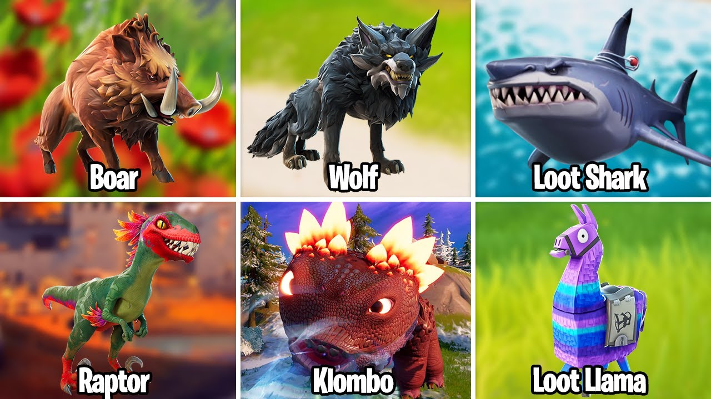
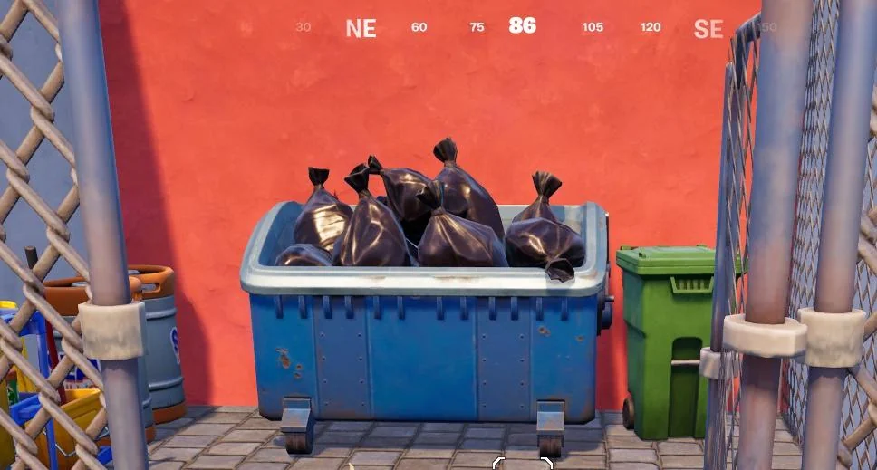
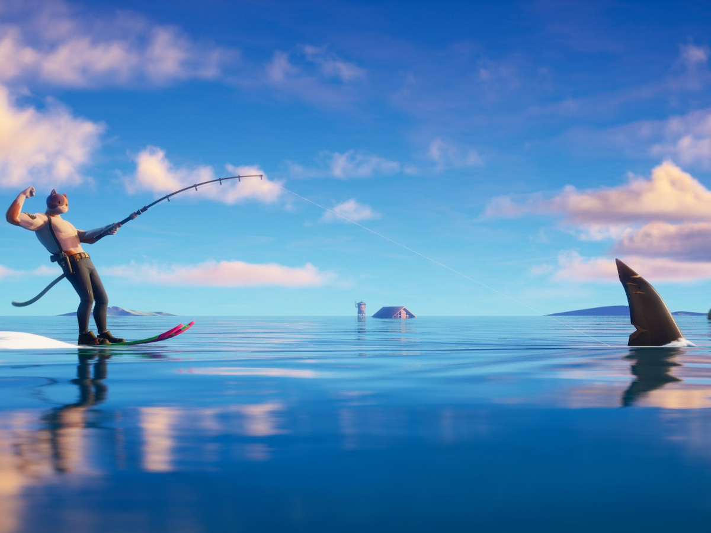
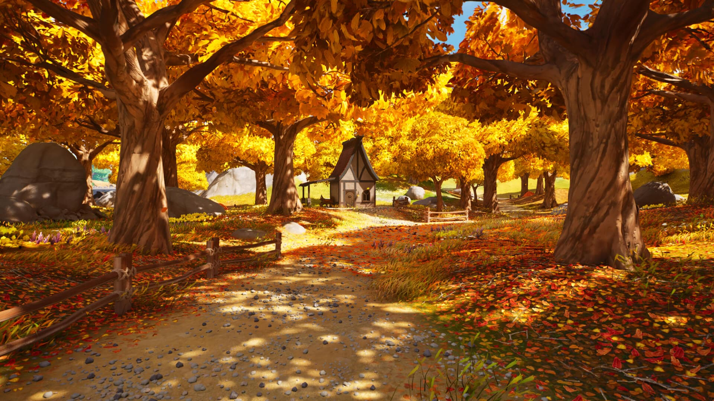

Kaitiaki Missions
Choose a mission and do your part to help protect the environment. You do not have to do everything at once — even one small action can help
Mission 1 - Protect Wildlife
Animals need safe places to live, find food and raise their young. We can help by respecting wildlife and keeping their habitats safe
- Do not disturb wild animals
- Keep dogs away from wildlife where needed
- Protect plants and habitats

Mission 2 - Reduce Rubbish
Rubbish can injure animals, block waterways and make parks and beaches dirty. Reducing waste helps keep these places cleaner
- Put rubbish in the correct bin
- Reuse items when possible
- Use a reusable bottle or bag
- Pick up litter safely when you can

Mission 3 - Protect Water
People, plants and animals all need clean water. Rubbish and pollution can travel into drains and waterways, so it is important to keep them clean
- Do not throw rubbish into waterways
- Use less single-use plastic
- Keep beaches and rivers clean

Mission 4 - Look After Nature
Forests, beaches and other natural areas provide homes for wildlife and places for people to enjoy. Treat these places with care
- Stay on paths when walking
- Do not damage plants
- Leave natural areas clean
- Respect places that are important to local communities
